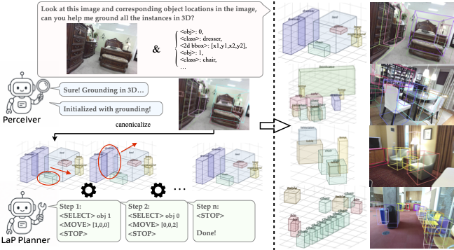
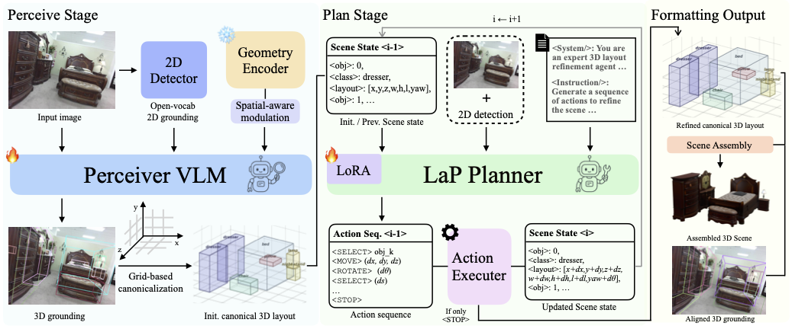
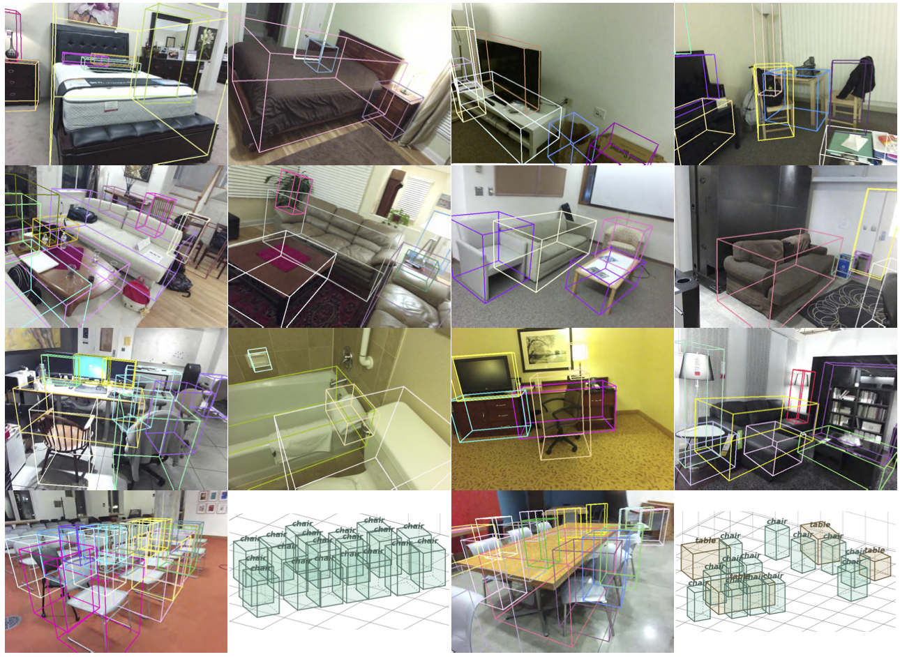
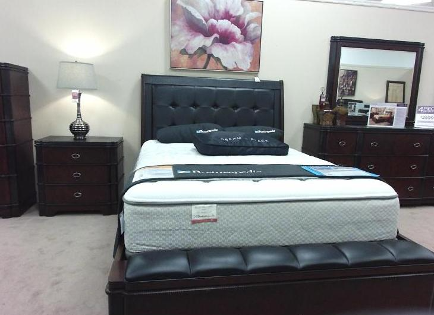
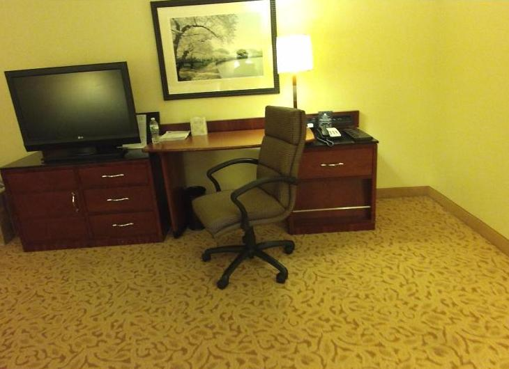
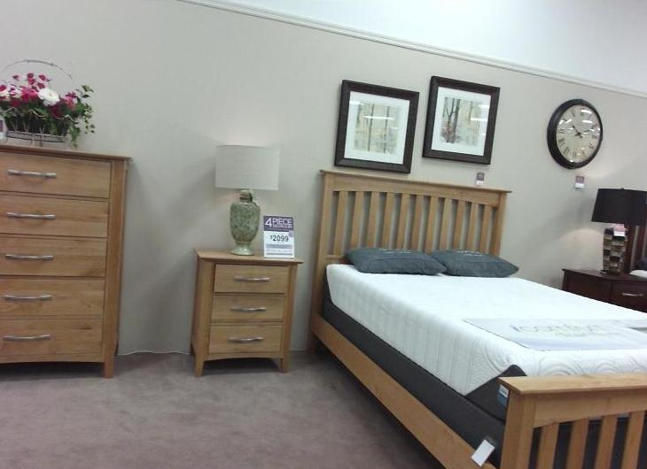
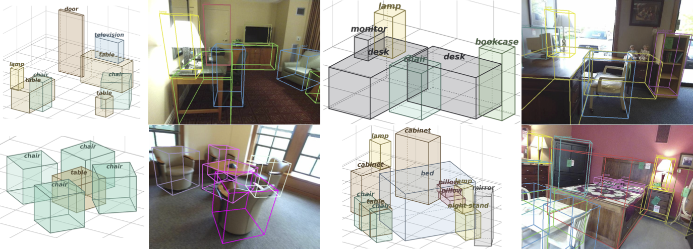

Perceive-then-Plan: Layout-as-Policy for Monocular 3D Scene Layout Estimation

What do we do?
Abstract
Building structured 3D scene layouts from a single image requires reconciling visual observations with physical and spatial constraints, a challenge that is difficult to address with direct prediction alone. In this work, we formulate monocular 3D layout estimation as a perceive-then-plan problem with vision-language models, where a Perceiver first grounds the 3D objects and then a Planner iteratively refines the scene hypothesis through actions that improve physical plausibility while preserving consistency with the input image. We propose Layout-as-Policy (LaP), which casts the planning stage as a policy learning problem: 3D layouts are represented as structured states, and refined via discrete actions such as translation, rotation, and rescaling. Starting from an observation-aligned initialization with the geometry-enhanced Perceiver, the LaP Planner is trained to produce action sequences that progressively resolve geometric inconsistencies and enforce realistic spatial relations. To enable effective learning, we combine supervised sequence initialization with preference-based optimization, allowing the model to learn corrective behaviors without requiring explicit reward engineering. This formulation transforms layout estimation from a one-shot prediction task into an iterative refinement process, enabling better handling of global constraints and complex object interactions. Experiments demonstrate that our approach produces layouts that are more physically coherent and better aligned with visual observations, while naturally supporting downstream tasks such as scene editing and manipulation.
Proposed Framework & Method
Overview of our perceive-then-plan framework. The Perceiver grounds 3D boxes from the input image. A canonicalized, grid-based representation is then iteratively refined by the LaP Planner, which treats each layout as a structured state and selects discrete actions (translate, rotate, rescale) via a learned policy until convergence. The final layout supports both scene assembly (digital twin) and camera-space projection (3D grounding).

Action Space & Perturbed Data Synthesis
We illustrate our designed action space and perturbed data synthesis process, which provides a strong starting point for our Layout-as-Policy core design.

Results
Perceiver results, shown both reprojection and layout in the 3D space.

Planner Refinement Process
We visualize the iterative refinement process of the LaP Planner on real-world scenes. For each example, the video shows the step-by-step action sequence applied to the initial Perceiver layout, and the image shows the final refined 3D scene layout projected back into the image space.

Example 1: The planner progressively resolves object overlaps and adjusts orientations to produce a physically coherent indoor scene layout.

Example 2: Starting from an observation-aligned initialization, discrete translate, rotate, and rescale actions refine the layout to satisfy spatial constraints.

Example 3: The planner handles complex multi-object scenes by iteratively correcting geometric inconsistencies across successive refinement steps.
More Qualitative Results
Additional qualitative visualizations of 3D scene layouts estimated by our Perceive-then-Plan framework across diverse indoor scenes, demonstrating both 2D reprojection accuracy and 3D spatial coherence.

In-the-wild & In-the-scene Results
We use in-the-wild real captures from 3D reconstruction datasets to validate our method's ability in real-world scenarios.

BibTeX
@misc{zhou2026perceivethenplan,
title={Perceive-then-Plan: Layout-as-Policy for Monocular 3D Scene Layout Estimation},
author={Junwei Zhou and Yu-Wing Tai},
year={2026},
eprint={todo},
archivePrefix={arXiv},
primaryClass={cs.CV},
url={https://arxiv.org/abs/todo},
}